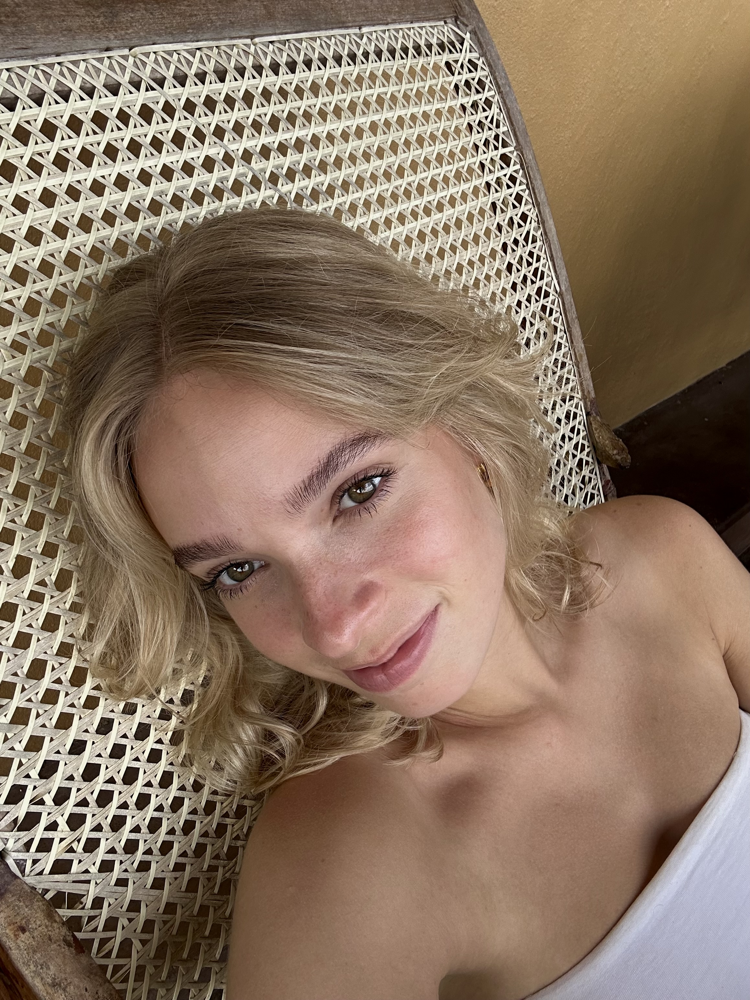

Ik ben Sarah, 20 jaar en hou heel erg van reizen. Mijn ouders hebben mij van kinds af aan meegesleept naar allerlei plekken. Afgelopen zomer was ik gestopt met mijn studie. Dus besloot ik iets zinvols te doen. Ik ging namelijk in mijn eentje naar Sri Lanka om hier vrijwilligerswerk te doen! Ik hielp bij lokale projecten met zeeschildpadden en straat honden. Op deze site kun je de verhalen en foto’s zien van mijn reis!